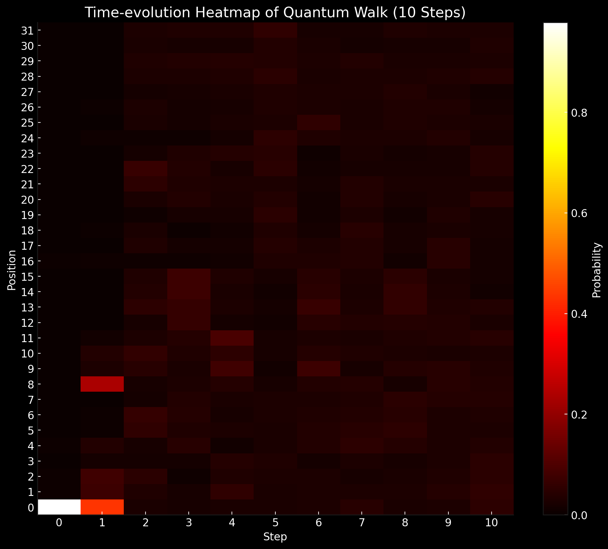
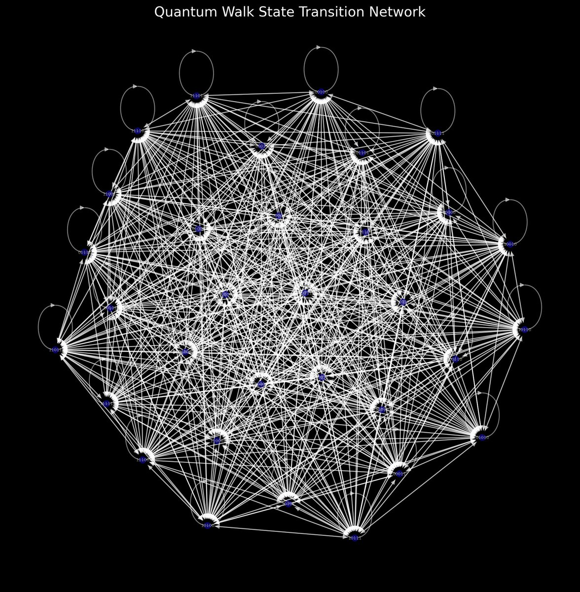
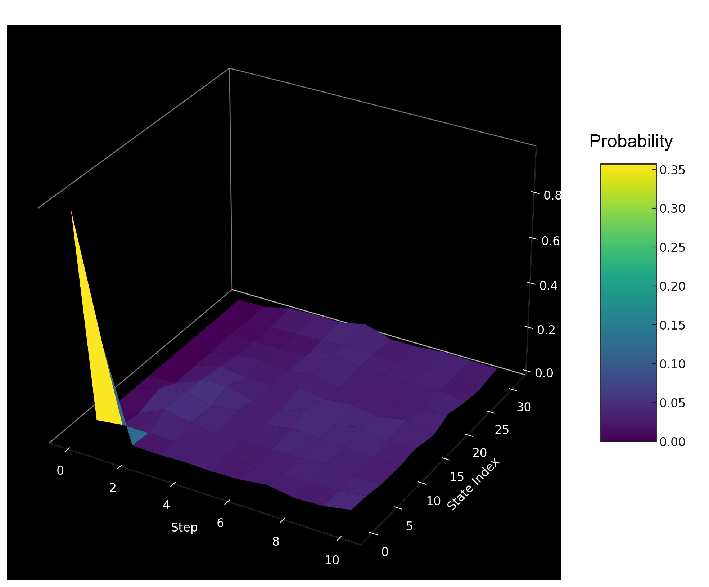
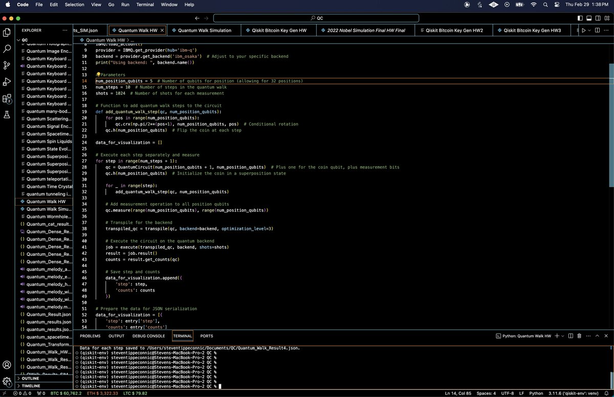

A Quantum Walk On IBM's 127-Qubit Quantum Computer Osaka
This experiment aims to execute a discrete-time quantum walk on IBM's 127-Qubit Quantum Computer Osaka, utilizing Qiskit and a series of quantum gates to create the walk over a predefined number of steps. A quantum walk is the quantum mechanical counterpart of a classical random walk, set by the quantum superposition of all possible paths. It includes a 'coin' qubit for determining movement direction and multiple position qubits to represent different locations. By applying conditional rotations and Hadamard gates, the walk introduces quantum interference, leading to a non-classical distribution of position probabilities. The experiment's outcome is visualized through the measurement of position qubits at each step.
Code Walkthrough
1. Initialization:
The quantum circuit is initialized with n position qubits and 1 coin qubit. The position qubits represent the possible positions of the quantum walker, and the coin qubit determines the direction of the walk (left or right). The coin qubit is placed in a superposition state using a Hadamard gate (H), enabling both movement directions simultaneously.
2. Quantum Walk Steps:
The quantum walk progresses through a series of steps, each involving a conditional operation based on the state of the coin qubit.
A conditional rotation (CR_x) is applied between the coin qubit and each position qubit. The rotation angle is π/(2^(i + 1)) for the i-th position qubit, introducing a phase shift that depends on both the position and the coin's state.
The Hadamard gate is applied again to the coin qubit after each set of conditional rotations, flipping the coin to ensure a mix of deterministic and probabilistic behavior in the walk.
3. Measurement and Data Collection:
At each step of the walk, all position qubits are measured, collapsing their state to a classical outcome that represents the walker's position.
The measurement outcomes are collected over 1024 iterations (shots) to build a probability distribution of the walker's position at each step.
This data is used to observe the evolution of the quantum walk, highlighting the quantum interference patterns that differentiate it from classical random walks.
4. Data Analysis:
The collected data is analyzed to visualize the probability distribution of the walker's positions over time. This distribution showcases the properties of quantum walks, such as faster spreading and non-locality, compared to classical random walks.
Results:

The heatmap above visualizes how the probability distribution spreads and evolves, highlighting areas of higher probability (warmer reds) versus lower probability (cooler reds). This helps to capture the quantum walk's dynamics, showing the transition from an initial localized state to a more distributed probability pattern.
Central Position Dominance:
At the initial step (step 0), there's a significant concentration of counts at the central position (00000), as expected. This indicates that the walker starts in a well defined position before the walk begins.
Spread and Interference Patterns:
Unlike a classical random walk that would show a Gaussian (bell curve) distribution of probabilities over time, the quantum walk demonstrates a more complex pattern of spread. As the steps progress, the distribution of counts spreads out from the central position, indicating the quantum walker exploring the space. Notably, the spread is not uniform; certain positions exhibit higher counts than others, suggesting interference patterns that are a hallmark of quantum walks. This interference results from the superposition of multiple paths that the walker can take.

The network analysis chart above presents the quantum walk state transition network, constructed from the results. In this network, nodes represent quantum states and directed edges indicate transitions between states, with edge weights reflecting the transition probabilities (averaged between steps). This reveals the dynamics and relationships between different states in the quantum walk. The nodes centrality, depicted by their color intensity, highlights the 'importance' or connectivity of each state within the network, suggesting how central or peripheral they are to the quantum walk's dynamics.
The network analysis chart above presents the quantum walk state transition network, constructed from the results. In this network, nodes represent quantum states and directed edges indicate transitions between states, with edge weights reflecting the transition probabilities (averaged between steps). This reveals the dynamics and relationships between different states in the quantum walk. The nodes centrality, depicted by their color intensity, highlights the 'importance' or connectivity of each state within the network, suggesting how central or peripheral they are to the quantum walk's dynamics.
Superposition and Interference:
The results reflect superposition where the walker simultaneously exists in multiple states (positions). The interference (constructive and destructive) is evident in the varying counts across different positions, influenced by the phase relationships between the superposed states.
Symmetry:
The quantum walk retains a form of symmetry around the initial position, which is consistent with the walker's equal probability of moving left or right at each step, modulated by quantum effects.
Number of Communities Detected: 2
This suggests the network partitions into two distinct clusters, indicating a possible division in the quantum state space explored by the walk.
Communities:
Each community represents a cluster of closely interconnected states. For space, only the first five states of each community are shown in the network analysis chart above, but they hint at underlying structures or patterns in how the quantum walk evolves across different segments of the state space.
The presence of communities within the network might reflect coherent subspaces or regions of the state space that the quantum walk preferentially explores or transitions between.
Centrality:
The centrality of nodes provides insights into which states play pivotal roles in the quantum walk's evolution, possibly indicating states with significant probabilities or those that act as hubs in state transitions.

The 3D visualization above represents the evolution of selected quantum state probabilities in a quantum walk, plotted over discrete time steps. This shows how probabilities for different states evolve. The surface plot's peaks and valleys indicate varying probabilities across states at each step, reflecting the quantum superposition. This behavior underscores the fundamental differences between quantum and classical walks, showing the unique ability of quantum systems to explore multiple paths simultaneously.
In the end, this analysis and visualization provides a glimpse into the dynamics of quantum walks, demonstrating their non-classical behavior. The symmetry and spreading behavior underscore the quantum walk's utility in algorithms, leveraging superposition and interference.
A Small Sample Of Runs:
[
{
"step": 0,
"counts": {
"00100": 6,
"01000": 2,
"10000": 5,
"00001": 5,
"00000": 1002,
}
},
{
"step": 1,
"counts": {
"10010": 4,
"10001": 2,
"01001": 31,
"01100": 3,
"11001": 2,
}
},
{
"step": 2,
"counts": {
"11011": 16,
"10010": 27,
"01110": 36,
"11101": 34,
"11010": 29,
}
},
{
"step": 3,
"counts": {
"01100": 65,
"00001": 22,
"10110": 39,
"11111": 33,
"10011": 20,
}
},
{
"step": 4,
"counts": {
"00110": 21,
"11010": 21,
"10011": 23,
"00101": 29,
"01000": 43,
}
},
{
"step": 5,
"counts": {
"00001": 25,
"00011": 32,
"11011": 34,
"01110": 12,
"10110": 48,
}
},
{
"step": 6,
"counts": {
"00101": 37,
"10010": 19,
"01011": 28,
"01000": 38,
"10000": 34,
}
},
{
"step": 7,
"counts": {
"11101": 39,
"01111": 28,
"00111": 32,
"01101": 28,
"11011": 28,
}
},
{
"step": 8,
"counts": {
"01011": 33,
"00101": 52,
"01001": 40,
"11010": 32,
"00001": 30,
}
},
{
"step": 9,
"counts": {
"11100": 32,
"00111": 40,
"11110": 22,
"00011": 30,
"01101": 33,
}
},
{
"step": 10,
"counts": {
"10010": 20,
"00101": 29,
"00100": 36,
"01101": 38,
"11100": 43,
}
}
]
Code:
# Imports
from qiskit import IBMQ, QuantumCircuit, transpile, execute
from qiskit.visualization import plot_histogram
import numpy as np
import json
# IBM account setup
IBMQ. save_account('Your_IBM_Key_O-', overwrite=True)
IBMQ.load_account()
provider = IBMQ.get_provider(hub='ibm-q')
backend = provider.get_backend('ibm_osaka')
print("Using backend: ", backend. name())
# Parameters
num_position_qubits = 5 # Number of qubits for position (allowing for 32 positions)
num_steps = 10 # Number of steps in the quantum walk
shots = 1024 # Number of shots for each measurement
# Function to add quantum walk steps to the circuit
def add_quantum_walk_step(qc, num_position_qubits):
for pos in range(num_position_qubits):
qc.crx(np.pi/2**(pos+1), num_position_qubits, pos) # Conditional rotation
qc.h(num_position_qubits) # Flip the coin at each step
data_for_visualization = []
# Execute each step separately and measure
for step in range(num_steps + 1):
qc = QuantumCircuit(num_position_qubits + 1, num_position_qubits) # Plus one for the coin qubit, plus measurement bits
qc.h(num_position_qubits) # Initialize the coin in a superposition state
for _ in range(step):
add_quantum_walk_step(qc, num_position_qubits)
# Add measurement operation to all position qubits
qc.measure(range(num_position_qubits), range(num_position_qubits))
# Transpile for the backend
transpiled_qc = transpile(qc, backend=backend, optimization_level=3)
# Execute the circuit on backend
job = execute(transpiled_qc, backend, shots=shots)
result = job.result()
counts = result.get_counts(qc)
# Save step and counts
data_for_visualization.append({
'step': step,
'counts': counts
})
# Prepare the data for JSON
data_for_visualization = [{
'step': entry['step'],
'counts': entry['counts']
} for entry in data_for_visualization]
json_filename = "/Users/Documents/Quantum_Walk_Result.json"
with open(json_filename, 'w') as f:
json.dump(data_for_visualization, f, indent=4)
print(f"Data for each step saved to {json_filename}."
